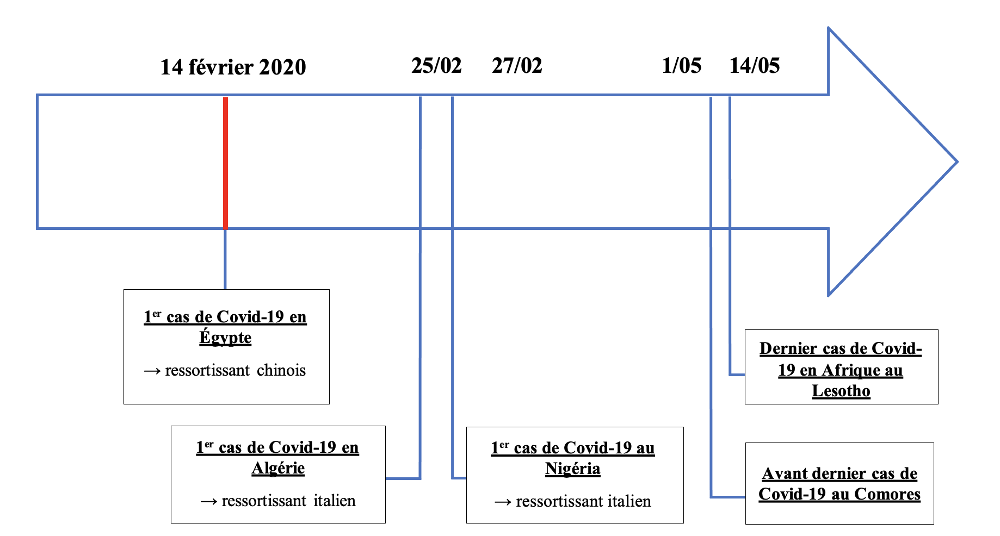
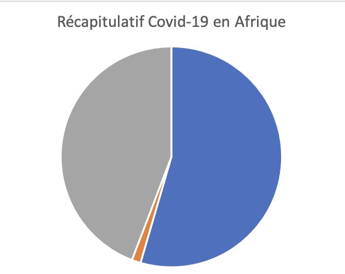

Afrique : pourquoi la catastrophe annoncée n'a pas eu lieu ?
Cette partie nous permet d'exposer quelques raisons explicatives de la faible propagation et du faible impact du Covid-19 en Afrique. C'est pourquoi le dernier cas de contamination est apparue tardivement, soit le 14 mai 2020.
Quelques chiffres

En Afrique le Covid-19 c'est au 9/01/21 :
3 021 769 cas cumulés
72 121 décès cumulés
2 450 492 guérisons cumulés
Quelques raisons
Le continent a une culture du risque viral bien marquée par ses épidémies contemporaines : Ebola, Sida...
・Le SPAR
(State party self-assesment annual reporting tool), indique que la capacité des
systèmes de santé du territoire sont en capacité de combattre une maladie.
・Mais le IDVI (Infectious vulnerability index) indique les facteurs indépendant des infrastructures de santé tels que la
gouvernance du pays ou bien la démographie pourrait nuir à la luttef du Covid-19.
La pyramide des âges est inversée
L'age moyen au Nigéria est de 15 ans, or le Covid-19 touche princiapelement les personnes âgées.
" Le Covid n'a plus de vieux à tuer chez nous "
Une population moins densément peuplée
nécessite de moins se déplacer, ce qui contre l'interaction du virus avec d'autres corps. Une densité de population faible est liée avec un taux de mortalité plus faible. De plus ils vivent davantage au grand air, les foyers épidémiques peinent à se développer tels que dans les Ephad.
created with
Static Site Generator .